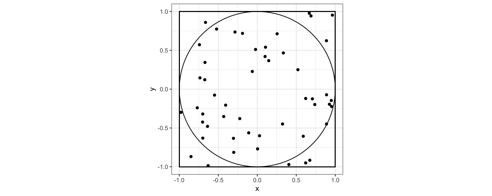

x = c(1L, 1)quiz solutions
Find here solutions to quizzes with explanations.
quiz 1
Is x a list or an atomic vector?
x is an atomic vector. Specifically, 1L is coerced to type double due to c().
x = c(1L, 1)
typeof(x)[1] "double"The output below is the result of printing object y to the screen. Is y a list or an atomic vector?
[[1]]
[1] 3
[[2]]
function (x)
{
return(x^2)
}y is a list because it has heterogeneous elements. The first element is the double 3 while the second element is a function.
What is the output of the following code chunk:
TRUE | NA[1] TRUEWhat’s a generic?
A generic is a function that dispatches to other class-specific functions depending on the class of the argument.
quiz 2
select() returns a ___
data frame or tibble
%>% and |> are both ___
pipes
mutate() creates a new ___
column
TRUE or FALSE: a tidy data frame has individual observations on the rows, variables on the columns and values in each cell.
TRUE
quiz 3
The gg in ggplot stands for ___ of ___.
grammar of graphics
To create a scatter plot with ggplot2, I need to add the geometry geom_[___]
point, geom_point()
TRUE or FALSE: to change the color of a plot, based on the column var1 of the data set, I need to put color = var1 inside the aesthetic aes() function. To change the color of all points to red, regardless of the data, I should put color = 'red' outside the aesthetic function.
TRUE
What’s wrong with the code below?
cars %>%
ggplot(aes(x = dist))
geom_histogram()Missing a + to connect ggplot layers.
quiz 4
true or false: Newton’s method, \(x_{n+1} = x_n - \frac{f(x_n)}{f'(x_n)}\), iterates to find extrema of function \(f\).
false
true or false: Newton’s method always converges to the same point, regardless of starting position \(x_0\).
false
quiz 5
What does MM stand for?
majorize-minimize or minorize-maximize (accept either or both)
What are the two conditions a surrogate function must satisfy in an MM algorithm?
In majorize-minimize, the surrogate must satisfy tangency:
\[ g(\theta_n|\theta_n) = f(\theta_n) \] and \(g\) must minorize \(f\),
\[ g(\theta |\theta_n) \leq f(\theta) \ \forall \ \theta \]
(In the case of majorization-minimization, \(g\) must majorize \(f\).)
quiz 6
Monte Carlo integration is most useful for low-dimensional integrals (TRUE or FALSE)?
FALSE
Describe in 1 or 2 sentences how the following image is an example of using Monte Carlo integration to estimate \(\pi\).

The can estimate \(\pi\) by integrating to find the area of the unit circle. We map the integration problem to computing the mean number of points that fall in the circle when uniformly placing points in the box.
quiz 7
TRUE or FALSE: fluidPage creates pages with components that scale in real time to fill all available browser width.
TRUE
The two main arguments of the shinyApp() function are ui and ___.
server
quiz 8
API stands for __.
application programming interface
What does a 200-level status code indicate?
successful request
What does a 400-level status code indicate?
client error